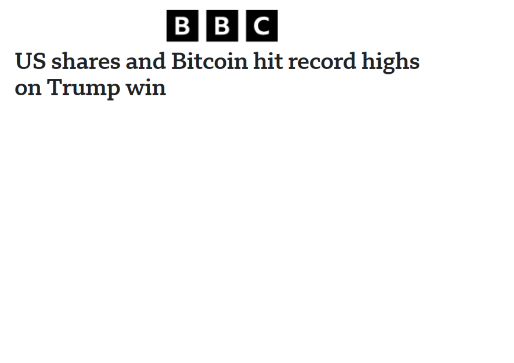
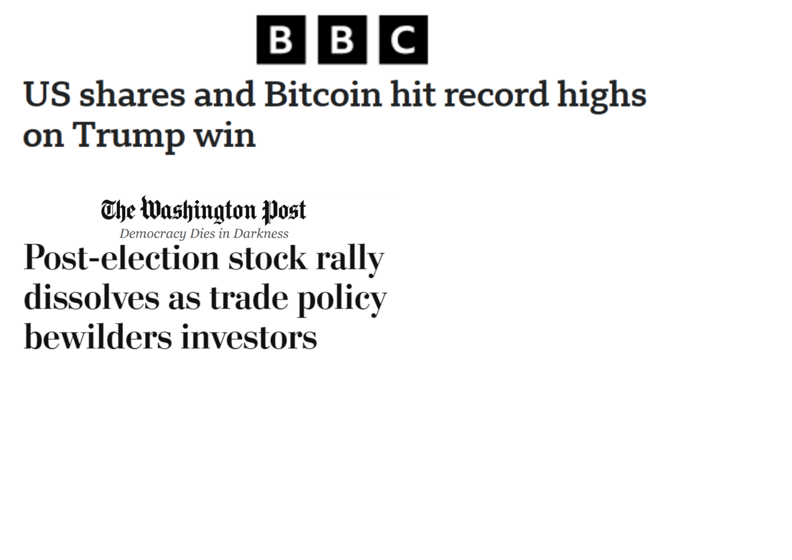
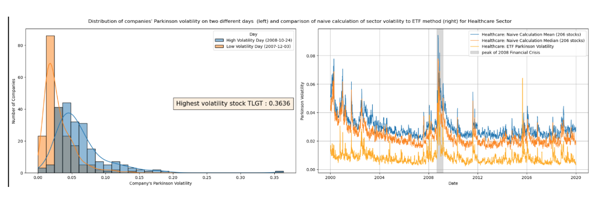
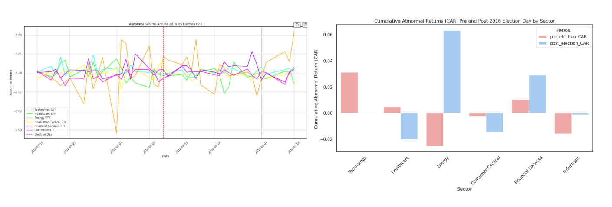

King of White House, Wolf of Wall Street: How US presidential election impact companies' performance on the
stockmarket
Brought to you by Team Adacore: Ghassan ABBOUD, Eliota BRAHA, Nicolas PAFUMI, Asia PEDROIA, Elsa SÁNCHEZ
FERNÁNDEZ


Abstract
This week, we will be talking about how investors can exploit events to increase their profits. In particular, we will be discussing presidential elections,
since it is well known that they shake up the stock market every four years.
Investors react nervously to uncertainty, worry about potential policy changes, often amplifying even small market fluctuations.
Understanding these dynamics can help anticipate market movements and hedge portfolios around election cycles -
or at least give analysts an excuse to dive deep into charts and election data late into the night. More importantly,
market movements reveal how investors perceive candidates and their policy proposals.
In this post, we take a data-driven look at how presidential elections affect company performance and investor
behavior over time. Using historical stock market data, election results, and prediction market trends,
we track how markets react as the likelihood of a candidate winning change. Particularly interesting is how
different sectors-technology, energy, healthcare, finance-respond to the uncertainty and outcomes of election cycles.
The goal is simple: to show how politics and markets “dance” together, based on data, while keeping the discussion
accessible. By analyzing past elections and looking ahead to the upcoming 2024 election, we hope to identify patterns
that explain when, why, and how the market gets nervous.
Research questions
Can we describe the behavior of an entire sector?
Do sectors show significant patterns in shared financial behavior, and are they affected differently?
Which sectors respond most strongly to presidential elections?
What characteristics of elections trigger increased market volatility?
Does the president’s party have differential effects on certain sectors?
To answer these questions, we
will use historical stock market data and publicly available election data. We will also use prediction market data as
proxy for the perceived probability of each candidate winning.
Nasdaq Insights
So, what exactly are we looking at when we say “Nasdaq”? Our main dataset is a rich collection of historical stock
prices for companies traded on the Nasdaq exchange, along with some ETFs thrown in for context. For those not familiar:
ETFs (Exchange-Traded Funds) are like baskets of stocks bundled together. You can think of them as a way to invest in an entire
sector without buying every single company individually. Meanwhile, individual stocks let us zoom in on how specific
companies react under market stress, election uncertainty, and all the drama that comes with four-year cycles.
To make our lives a bit more insightful, each ticker is annotated with its sector, letting us ask questions like:
Does tech freak out more than energy when election season hits? Is healthcare the calm, stoic sibling in the family of market
sectors? These sector labels are crucial for understanding sector-specific effects during elections.
Let's take a look at all this together on the Bloomberg Terminal!
Dataset Unwrapping
The number of tickers in our dataset varies over time due to IPOs,
delistings, and other corporate events. The graph below illustrates the overall date coverage,
showing the number of active stocks and ETFs at each point in time. Notably, the first ETF
in our dataset appears in 1993, corresponding to the inception of the S&P 500 ETF, while stocks
span a longer historical period.
The following graph shows the date coverage of tickers broken down in 11 sectors,
using the standardized international GICS classification. We observe that the number of active tickers generally
increases over time. Notably, there is a sharp jump in March 1983, with multiple new listings. As no clear event
such as an IPO boom or regulatory change explains this surge, it is likely due to a change in data collection methods
or limitations in the data source. To ensure stable results, we therefore restrict our analysis to elections from 1984 onward.
Financials
Returns and Log-Returns
When we want to measure how a stock is performing, the first thing that comes to mind is:
how much did it move today? In finance, this is captured by returns. At its simplest,
the daily return of a stock is the relative change in price from one day to the next.
Returns
To compute how much a stock earns we take the difference in value to the next period \(V_f\)
divided by value at the start of the period \(V_i\).
$$ R = \frac{V_f - V_i}{V_i} $$
In practice, we usually use for value the adjusted close prices and for the period days.
Adjusted close prices account for corporate actions like stock splits, dividends,
and spin-offs, so they reflect the true economic value of holding the stock. This
gives us a simple, intuitive sense of performance: positive numbers mean gains, negative numbers mean losses.
However, a commonly used alternative is the logarithmic return (or log return). Rather than measuring
relative change directly, it is defined as the natural logarithm of the ratio of consecutive prices.
Log-Returns
$$r_t = \log\frac{V_t}{V_{t-1}}$$
Why go through the trouble? The magic property of log returns is time additivity:
the log return over multiple days is just the sum of daily log returns. This makes it
trivial to compute cumulative returns over a period. For example, if a stock gains 1%
on day 1 and loses 1% on day 2, the cumulative log return is exactly zero—something that
doesn’t hold with regular returns.
Kurtosis
Kurtosis measures how much of the data lies in the tails of a distribution—essentially, how likely
extreme events are. One additional advantage of using log returns is that they tend to reduce kurtosis,
smoothing out the “fat tails” often seen in standard returns. This makes the distribution closer to normal,
which is particularly helpful for statistical analysis, modeling, and comparing sectors or stocks. The differences
are subtle and usually invisible in histograms, as they appear mainly in rare, extreme price moves.
Alpha and Beta
Not all stocks move the same way when the market shifts. Beta measures how sensitive a stock is to overall market movements,
which we track here using the S&P 500 as the market reference. A beta above 1 means the stock tends to amplify market swings
(tech stocks, for example), while a beta below 1 means it’s more stable (utilities are classic examples).
But some companies consistently outperform (or underperform) the market in ways that can’t be explained by beta alone.
That’s alpha: positive alpha means the stock does better than expected given its beta, negative alpha means it lags behind.
Alpha and Beta
In practice, we model this with a simple linear regression:
$$R_i = \alpha_i + \beta_i R_m + \epsilon_i$$
Here, \(R_i\) is the stock return, \(R_m\) the market return,
\(\beta_i\) the market sensitivity, \(\alpha_i\) the extra return not
explained by the market, and \(\epsilon_i\) the residual, or abnormal return.
Abnormal Returns and Cumulative Abnormal Returns (CAR)
Having defined alpha and beta, we can now isolate what truly interests us in an event-driven analysis:
the part of returns that cannot be explained by general market movements. These unexplained deviations
are what we refer to as abnormal returns, and they form the core building block of an event study
and can be aggregated over time into cumulative abnormal returns (CAR) to assess total impact.
Abnormal Returns
Abnormal returns correspond to the residual term of the market model. Intuitively, they capture
how much a stock (or sector) moves beyond what would normally be expected given its exposure to
the market.
A positive abnormal return indicates that the asset outperformed its expected return on that day,
while a negative value signals underperformance. In the context of elections, these deviations are
precisely what may reflect shifts in political expectations or policy uncertainty.
Cumulative Abnormal Returns (CAR)
Market reactions to major events rarely unfold in a single trading day. To capture the total
impact over a window surrounding an event, we aggregate abnormal returns over time.
Cumulative abnormal returns allow us to assess whether an event leads to a persistent revaluation
of assets, rather than a short-lived fluctuation. This makes CAR a natural metric for comparing
the impact of elections across sectors.
Estimators of Volatility
Returns typically fluctuate around zero, as prices move up and down around a longer-term trend. During periods
of stress - such as the 2008 financial crisis (see figure below) - these fluctuations become noticeably larger,
reflecting a sharp increase in volatility. Observations from past crises offer a useful reference for the kinds
of volatility we might anticipate during elections.
To move beyond visual impressions, we quantify this behavior using the standard deviation of returns over a rolling window.
This measure provides an estimate of how volatile the market has been recently and is commonly referred to as historical
volatility.
Historical volatility
Volatility is the finance term for the standard deviation. It can be computed using usual unbiased
standard
deviation formula with a rolling window.
With
\(N\) the size of the selected window, e.g. \(t\) representing a day, \( \bar{V} \) the average price for the
given window and
\(V_t\) the price on a given \(t\) (e.g. a day).
Sectors generally follow the overall market trend, with spikes in volatility during events that shake the entire economy,
like the 2008 financial crisis or the market drop in August 2011. But a closer look reveals that not all sectors react
equally, some are more sensitive to specific events. Take the energy sector, for example: between 2005 and 2007, it showed
above the market volatility as Middle East conflicts and other factors drove oil prices up and down. Most other sectors barely
flinched. Similarly, the technology sector experienced heightened volatility from 2001 to 2003 after the dot-com bubble burst,
while other industries remained relatively stable.
These patterns already hint at something important for our study: sector-specific analysis matters. Around elections,
different policy proposals - think climate change, Big Tech regulation, or healthcare reform - will impact sectors
in very different ways.
Now, historical volatility is easy to compute and widely used for long-term analysis and risk management. But it comes with
limitations: it requires a sufficiently large window to give reliable estimates, which can smooth over the short-term
fluctuations we’re interested in around election dates. It also only considers close prices, ignoring intraday swings
that can happen when markets react swiftly to news. For this reason, we turn to Parkinson’s volatility estimator, which
leverages the day’s high and low prices to provide a more responsive measure - perfect for capturing those quick market moves
around elections.
Parkinson volatility
Parkinson's volatility uses the highest and lowest price reached in a given time (e.g. a day) to
compute volatility.
It needs to be computed over a time window (e.g. a month) and yields
accurate estimates with smaller values of \(N\), allowing to
capture short-term variation without sacrificing reliability.
where \( H_t \) and \(L_t\) are the high and low prices on day \(t\). The factor \( \frac{1}{4 \ln(2)}
\) is derived
from modeling
returns as a geometric Brownian motion.
Making Sense of Sectors
When Sectors Correlate (and When They Don’t)
One useful way to understand how sectors behave is by looking at correlations. If the correlation between two sectors is 1,
they move in lockstep—what happens in one affects the other directly. A correlation of 0 means they are essentially independent,
and a correlation of -1 implies they move in exactly opposite directions. By visualizing correlations across sectors over the past,
and highlighting key events such as the 2008 financial crisis, the 2016 US election, and the 2020 Covid crisis, we can see how different
events influence these relationships.
Our analysis confirms what we might expect: companies within the same sector generally move together, showing consistently
higher correlations than companies in different sectors. However, inter-sector correlations aren’t static—they shift depending
on the event. Take the 2008 financial crisis, for example. Consumer Defensive stocks suddenly correlated strongly with Energy
and Healthcare sectors, reflecting how systemic shocks ripple through the entire economy. A similar story unfolds during the Covid-19 crash.
Interestingly, the 2016 election tells a different tale. Correlations across sectors actually decreased, even when compared
to a 20-year baseline. In a sense, the election “uncoupled” sectors, highlighting how political events can trigger unique,
sector-specific reactions depending on candidates’ policy positions. This finding reinforces our hypothesis that elections
lead to idiosyncratic sector responses.
Tracking Sector Performance with ETFs
So how can we capture the performance and volatility of an entire sector? Throughout our analysis so far, we have
relied on sector-specific ETFs as our main reference, and we will continue to do so for good reasons. Specifically,
we use the Select Sector SPDR family, well-established ETFs that track the companies within each S&P 500 sector. Each ETF
is market-cap weighted, with roughly half of the holdings concentrated in the top ten companies, ensuring that sector performance
is driven by the companies that matter most.
This approach has clear advantages over simply averaging the volatilities of all individual stocks in a sector.
Large companies naturally have a greater impact on sector performance, so a naive average would dilute their influence.
At the same time, smaller companies tend to be more volatile, often due to low trading volumes rather than true sector trends.
Giving them equal weight would artificially inflate perceived sector volatility.
To see this in practice, we compared sector volatility calculated as a simple average of individual stocks to the volatility of the corresponding ETF.

The histograms on the left reveal an interesting pattern: on any given day, the distribution of volatilities within
a sector is right-skewed. Most companies cluster around a central volatility value, but a handful of outliers spike much
higher. This aligns with our earlier intuition that smaller companies, which are more sensitive to day-to-day trading, can
disproportionately influence simple averages. In the healthcare sector, for example, TLGT (Teligent Inc.) stands out with a
volatility of 0.36. At the time, it was a tiny pharmaceutical company with a market capitalization of just $10 million.
Unsurprisingly, this explains why a naive calculation, simply averaging all individual stock volatilities, consistently
overestimates the sector’s volatility, as shown on the line plots on the right. What’s somewhat surprising, though, is
that despite this overestimation, the naive approach still captures historical patterns over two decades and isn’t as noisy
as one might expect. Using the median instead of the mean slightly improves the estimate, but overestimation persists.
For all these reasons, we continue to rely on sector ETFs to study sector variations. They provide a more accurate,
market-cap-weighted picture, and are also more computationally efficient for our analysis.
Event study
Now that we’ve covered all the tools, we can finally dive into the exciting part: seeing how elections actually move
the market. Here’s how we tackle it in our analysis:
Defining the Event Window
The event at the center of our study is Election Day. To capture both anticipatory jitters and the immediate market reaction,
we look at a symmetric window spanning a few trading days before and after the vote. For this study, we focus on a 5-day
window: short enough to isolate the election effect, long enough to see the market respond.
Measuring Returns and Volatility
Within this window, we calculate the realized stock returns and volatility metrics. These numbers tell us what actually
happened in the market, giving us a snapshot of the collective investor response.
Comparing to Expected Values
The heart of an event study lies in defining “normal” behavior. Using models that account for market exposure and sector
characteristics, we estimate expected returns and volatility. By comparing realized values to these expectations, we can
quantify the abnormal performance directly associated with the event.
Aggregating and Testing Significance
To see the bigger picture, we aggregate results across sectors and multiple election cycles. Statistical tests then help
us decide whether the effects we observe are meaningful or just random noise. This allows us to infer whether elections
consistently influence market behavior.
Abnormal returns based event study
Let us use this method to analyze the impact of the 2016 presidential election on different sectors.
[graph qui ressemble à celui de elsa: choose one particular election, you get 2 graphs, left for abnormal return
lineplot, right for CAR barplot]

Look at 2016 for example:
Visualizing pre- and post-election cumulative abnormal returns shows the sector most impacted by results of the 2016
presidential election is the energy sector, with a significant cumulative abnormal return of 0.06 over 20 days, crushing
other sectors. This is consistent with the pro-fossil fuel of the elected Trump administration, as well as the
expectations of climate deregulation. The lineplot also illustrates a jump in abnormal returns the day of the election,
as the winner was announced.
Funnily enough, pre-election CAR was negative for the energy sector. Those of us who followed the 2016 election remember
that Hillary Clinton, the more environmentally conscious candidate, was initially predicted to win the election before
Trump's electoral victory surprised many. This headline from the Wall Street Journal perfectly captures the market
sentiment that led to the energy sector's soar.
Statistical tests to show significance: little statistical tables, which sector is significant, dividing by Democrat-win
vs republican win or not.
Which companies and sectors are Democrat vs Republican focused
commentaires: look at energy, always goes up after republican win
[bubble graph]
Abnormal Volatility based event study
description maths
meme graphe que presidential dashboard (tete des president) but with volatility
statistical tests